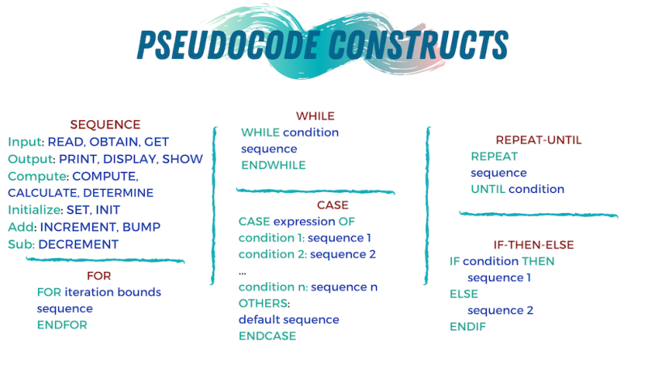

Understand the problem. Write it down on paper, and rewrite it or draw diagrams until it makes sense to you. If you can explain it to someone else, then you understand it. If you don't have another person to explain it to, you can try Rubberducking.
Plan the solution. No matter what the problem is, you will waste time and energy just diving in. You need to have a plan. Here are some questions to consider at this stage:
Does your program have a user interface? What will it look like? What functionality will the interface have? Sketch this out on paper.
What inputs will your program have? Will the user enter data or will you get input from somewhere else?
What’s the desired output?
Given your inputs, what are the steps necessary to return the desired output? This is where you start writing the algorithims that solve the problem.
Pseudocode (writing out the program in plain English). This helps you slow down and think through each of the steps of the program.
Divide and conquer. Now that the problem is broken up into smaller ones, you can tackle the simplest ones first. Some of the larger, more complex problems may need further analysis and break down, and that's ok. You may also have additional steps of connecting the subproblems, but you can do that at the end.
Remember that computers have the same intelligence as rocks. "Code is there to explain the comments to the computer." Use comments as your developing your code to explain what you want to do, then you can write the code to tell the computer how to do what you're trying to do.
When you're planning your algorithms, remember the following with new variables: Name (what are we going to call it?), type (what type of data does it contain?), initVal (what is the initial value?). Your new variabel algorithm is: Crate a variable called name of type type that starts with the value initVal.
Output considerations are what message do I want to send the user? Usually this is text. So your algorithm is Output the text message. Inputs can be variables (where the answer from the user will be stored), messages (questions being asked of the user). The algorithm is ask the user message and store the answer in variable.
If you are stuck, try the following:
Debug. Go through the solution line by line to see where the mistake is.
Reasses. Take a step back and look at it from another perspective. Is there anything that can be simplified?
Reboot. Another method of reassessing is starting over. Delete everything you did and start again.
Research. This is helpful to do even if you've solved the problem. You might find a better solution to the same problem.
Remember. Try to focus on the small problems, instead of the larger one.
Pseudocode Notes

At its core pseudocode is the ability to represent six programming constructs (always written in uppercase): SEQUENCE, CASE, WHILE, REPEAT-UNTIL, FOR, and IF-THEN-ELSE. These constructs — also called keywords — are used to describe the control flow of the algorithm.
SEQUENCE represents linear tasks sequentially performed one after the other.
WHILE a loop with a condition at its beginning.
REPEAT-UNTIL a loop with a condition at the bottom.
FOR another way of looping.
IF-THEN-ELSE a conditional statement changing the flow of the algorithm.
There are lots of ways to practice problem solving, besides just solving code problems - chess puzzles, math problems, sudoku, Monopoly, Go, video-games, cryptokitties, etc.
Sudoku - I have a game on my phone and solve at least one a day. Try here and here.
Example 1: Fizz Buzz
The original problem is stated here. Using the steps outlined above, we can write a program for this.
Understanding the Problem
We want to write a code that will print the numbers 1 through x, where x is a number given by the user, replace numbers divisible evenly by 3 with "Fizz", numbers divisible evenly by 5 with "Buzz", and numbers evenly divisible by both 3 and 5 with "FizzBuzz".
Planning
For our current purposes, the program can be written in the console. The only user interaction is entering the number for the end of the string, which the user can enter from a pop-up box. The desired output is a list of numbers from 1 to the number entered by the user, where each number evenly divisible by 3 is replaced with "Fizz", each number evenly divisble by 5 is replaced with "Buzz", and each number evenly divisible by both (or 15) is replaced with "FizzBuzz".
Pseudocode
When the user enters a number
Loop from 1 to the number entered by the user
If the number is divisible by 3, print "Fizz"
If the number is divisible by 5, print "Buzz"
If the number is divisible by 3 and 5, print "FizzBuzz"
Otherwise, print the number
Be sure to open the console before clicking the button below.